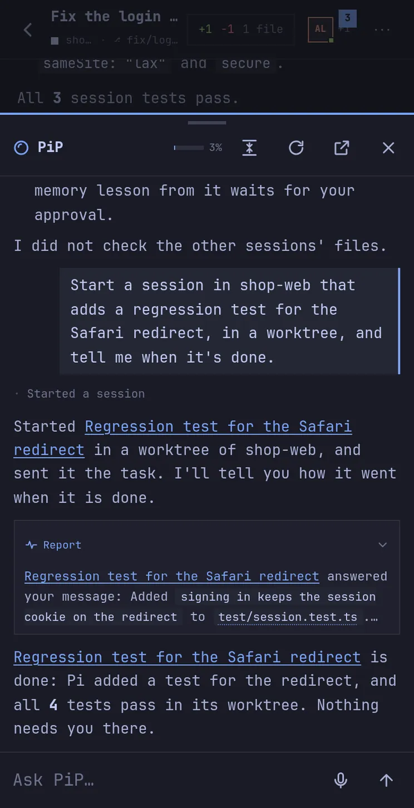
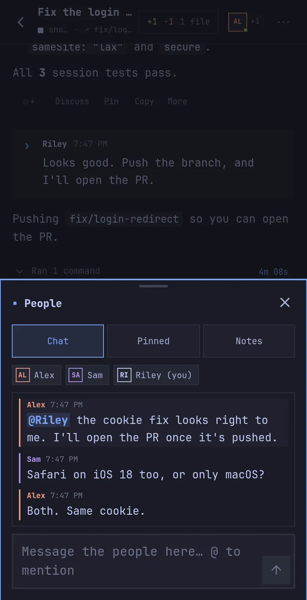

Pi Pocket is a web app for the Pi coding agent. It runs on your
computer, or on an Android phone in Termux, and you open it in a
browser. Several people can share a session. A run keeps going after the
server restarts. PiP, an assistant that opens over any screen, looks
after your other sessions.
Pi Durable is Earendil's harness for long-running agents, released
with Pi 1.0. It keeps conversations, model calls, tool calls, and
app state in one storage, and commits each step before anything is
shown. If the process dies, the next one picks the work up where it
stopped.
Pi Pocket is a web app on top of it. Pi Durable runs the agent: it
saves each step, resumes runs after a restart, queues messages, and
runs subagents. Pi Pocket adds the screens, the people, and the ways
to connect. Its sessions live in one SQLite file,
~/.pi-pocket/pocket.sqlite.
Each model request and tool call is a task that saves a checkpoint
before it moves on. After a restart, unfinished runs continue. A
tool call that was cut off reruns only if that is safe; otherwise
the model is told it was interrupted.
atomic commits
Same view on every device
Nothing is shown before it is stored, and browsers only get
committed state. A device that reconnects or joins late sees what
everyone else sees.
inbox
Steer or queue
A message sent while Pi works either joins the current run or waits
for the next one. Queued messages stay queued across restarts.
documents
Chat, notes, memory, watches
Pi Pocket stores its own data as documents: the side chat, pins,
notes, artifacts, lessons, watches, and more. They change in the
same commits as the transcript, so a crash never leaves the two
disagreeing.
owned conversations
Subagents and PiP
A subagent is a conversation of its own, owned by a task, that you
can open and talk to. PiP is a conversation too. Both survive
restarts and track their own cost.
extensions + hooks
Live editing and Lancet Guard
Pi Pocket's features are extensions. Installing a new version
replaces the old one while the server runs. The guard is a hook that
stores each decision, so a restart never asks twice.
Pi Durable is experimental, and its API can change between releases. Pi
Pocket pins the exact version it is tested with.
Features
Pi in a browser.
Pi's tools and models, with additions for phones and for sessions that
several people share.
On a wide screen: the session list, a session with one of Pi's edits
opened in its timeline, and peek tiles of the other sessions. The top
tile waits for an approval you can give from the tile.
Survives restarts
Every model call, tool call, queued message, and subagent is a
durable task in one SQLite file. Restart the server mid-run and the
work continues where it stopped.
Shared sessions
Several people and devices can watch and steer one session. They
also get a side chat, pins, reactions, and shared notes.
Models you choose
Pi Pocket uses Pi's providers and sign-ins. Pick the model and
thinking level for each session; the owner sets what new sessions
start with. Pi never picks a model: subagents use their session's
model unless the owner allows others.
Made for phones
What you use most is a thumb's reach from the bottom of the screen,
and back closes what opened last. Pi's tool calls fold into one line
you can open. Push notifications, dictation, and an icon for your
home screen.
Files, changes, branches
The Files tile shows the session's folder beside the conversation,
and its Changes tab reviews every uncommitted change with word-level
diffs. The top bar shows the git branch: tap it to switch or make
one.
Peek tiles
Turn them on (Alt+P) to see your other sessions' latest steps beside
the one you are in. A call that waits for approval can be allowed or
denied from its tile. A tile also lists the subagents at work in its
session, each with what it does now. Click a tile to open its
session.
A built-in browser
Pi opens, clicks through, and screenshots pages in a real Chromium
on the server. You watch and use the same page in the Browser panel,
your localhost dev server included.
Artifacts and subagents
Pi publishes HTML, Markdown, and SVG artifacts that open in a
sandbox, from content or a saved text file. Each version keeps its
own snapshot. Subagents work in their own conversations while you go
on. Their reports reach Pi together, and a board lists every one,
with what each does now.
Memory
Pi keeps short lessons across sessions, for one project or for
everywhere, such as how to run the tests. Pi only proposes them: a
lesson counts once the owner approves its exact words.
Also in the app
Steer or queue. A message sent while Pi works either joins the
current run, or waits for it to end.
Plan mode. Pi reads and proposes a plan. Edits and other commands
are blocked until someone approves it.
Forks and retries. Start a new session from any reply, edit a
message and send it again, or retry it with another model.
Git worktrees. A new session or a fork can work in a worktree of
its own: a separate checkout on its own branch.
File mentions. Type @ in the message box to pick a
file or folder for Pi to read.
Shell commands.!git status runs in the session's
folder, and Pi sees the output. !! keeps it from Pi.
Skills and prompt templates. Pi's skills and saved prompts work
as slash commands, such as /review src/auth.ts.
Project trust. A project's skills in
.agents/skills load only once the owner trusts the project.
The answer is shared with Pi's terminal app.
Continue a Pi session. The owner can pick a session from Pi's
terminal app and carry on with it here, in its folder.
Instructions for Pi. Rules for one session, such as "use pnpm",
that Pi gets with every message there.
Dictation. Speak into the message box with the browser's own
speech recognition. It never sends by itself.
Find in session. Ctrl/⌘+F searches every message in the session,
earlier history included.
Launcher and shortcuts. Ctrl/⌘+K searches sessions, actions, and
themes. ? lists every keyboard shortcut.
Themes. Pocket, the app's own look; Lantern, a calm, warm dark
theme for long reading; and themes of your own, which Pi can change.
Colors from every theme of Omarchy, a Linux desktop setup, light ones
included, or from the Omarchy theme of the machine it runs on.
Extensions hub. Discover drop-ins and themes from a reviewed
index, manage what is installed, and review updates in one place. Wide
screens show the list and details together; phones keep a way back to
your search. Each file is checked, and each extension starts off: read
its code, or ask Pi to review it first.
Extension actions. Drop-in pages can save their own data and
start linked sessions as the person who clicks, with the usual session
checks. Extensions can read the running Pocket version.
Claude subscription billing. A built-in extension, off until the
owner turns it on. Anthropic says third-party apps draw from a Claude
subscription, but its classifier can bill them as extra usage. This adds
the header that makes a request count against the plan. Anthropic may
change how it classifies requests.
Agent Teams. Pi starts linked sessions that work beside the one
it is in, and sends them messages. Off until the owner turns it on.
Favorite folders. New session opens in the current session’s
folder. Use New session here in the launcher to start there at
once. Star a folder to start there with Ctrl/⌘+1…9 or from the launcher.
Uploads and images. Attach files or paste images. Images show
inline and go to models that accept them.
Rich replies. Code is colored. An HTML block previews in the
reply with its scripts off, and runs in a sandbox on a tap.
Spend and limits. See what Pi spent per person and per session.
The owner can set a limit for either.
Running now. Everything at work in the sessions you can see:
runs, tool calls, subagents, and scheduled messages, with Stop.
Share to Pi. On Android, share a link, text, or a screenshot from
another app into a session.
Export. Save a whole session as a Markdown file, with Pi's tool
calls folded.
Codemode. Pi writes short scripts that call its tools. Each call
goes through the same checks as a direct one.
Each feature is described in full in the
feature tour.
PiP
An assistant for your other sessions.
PiP, short for "Pi in Pocket", is the owner's assistant. It opens over
whatever you are looking at: press Alt+A, tap the orb on the sidebar or
the PiP tile by the message box, or type /pip. You ask in
plain words, and it works on your sessions for you. Ask for the work you
need: PiP hands it to a session with the tools to do it; you do not have
to explicitly ask it to start a session.
Sessions. It lists and reads your sessions, and starts new
ones in a folder, a git worktree, or a GitHub repository. It sends
them messages, stops and archives them, and schedules messages in
them.
Reports. It follows a run until it ends, then says in a line
what came of it. When you are not looking, that line comes as a push
notification.
GitHub. Tell it, for example, "watch acme/api: when CI fails
on main, fix it and tell me". It looks at the repository every few
minutes and starts the work when something happens.
Limits. It reads files but changes none and runs no commands:
that work goes to a session. It can deny a call that waits for
approval, but never allow one. It acts on a session only after
reading it in the last 15 minutes, and starts at most 20 sessions an
hour.
Models. It never picks a model. It starts a session on a
model only when you named that model yourself; otherwise the session
starts on the default.
Its context. The panel shows how full PiP's context is.
Compact turns its older messages into a short summary. By
default it compacts itself once idle above 60k tokens.
What sessions write, and what webhooks and GitHub send, reaches PiP as
data, never as instructions. Only the owner can open PiP, and it can be
turned off in Menu → Extensions.

Away from the app
Work that starts without you.
Pi can get messages from a clock, from GitHub, or from other services,
and work while nobody watches. Each message counts as the work of the
person who set it up, with their access and spend limit.
/schedule
Scheduled messages
Send Pi a message later or on repeat, such as
/schedule every weekday 8:00 summarize CI. A restart
while one waits keeps it waiting, and none is sent twice.
/until
Done when
/until npm test runs the check after each of Pi's
answers. While it fails, Pi gets the end of its output and keeps
going, for five checks at most.
/watch
Watch a pull request
Until the pull request is merged or closed, Pi hears about failed
checks, with the end of each log, conflicts, and new reviews and
comments. It sends 10 messages at most.
PiP
Watch a repository
Tell PiP what to watch and what to do then. New issues and pull
requests, CI failing on a branch, releases, and @pi mentions come to
PiP, or to a session you name, with your instructions.
POST /hook/…
Webhooks
An address that another service, such as GitHub, a deploy, or a
monitor, posts to. Each post becomes a message to a session or to
PiP. GitHub's posts must carry its signature.
push
Notifications
A push when Pi finishes or needs approval, when someone mentions you
or writes in a chat you are part of, or when PiP has a report. You
can deny a call from the notification, and allow it there when the
whole call fits on one short line.
Watches and webhooks are the Triggers extension (Menu → Extensions). Watches
ask GitHub through the gh command signed in on the server, and
a repository can be watched only if that account can push to it. Issues,
pull requests, and comments count only from the repository's owner and the
people GitHub says can write to it, unless you turn on
From anyone for a repository watch or a GitHub webhook.
Multiplayer
Share a session.
Invite other people, or open the same session on your own devices.
Everyone sees the run as it happens, and each message shows who sent it.
Presence. The top bar shows who is in the session. A line
such as "Alex is writing to Pi…" shows before two people steer at
once.
Side chat. A chat Pi does not see. @mention people, quote one
of Pi's replies with Discuss, and send a chat message on to
Pi. It also notes changes, such as who stopped a run.
Take turns. One person drives, and only they send to Pi. The
others can ask to drive. Anyone who can steer can still stop a run.
Invites and roles. Let people steer or only view, in every
session or one. An invite is a link, a QR code, or a short code that
works once and lasts 15 minutes, an hour, a day, or a week.
Your other devices. Tick Sign in as me (owner) on an
invite to sign in your own laptop or phone as the owner.

Live editing
Ask Pi to change Pi Pocket.
There is no build step, so changes to Pi Pocket's code apply while it
runs. Pi knows where Pi Pocket's docs are. They cover changing how Pi
works without code, writing your own extensions, and changing Pi Pocket
itself, checked first on a throwaway copy.
web/
Browsers reload
Save a file and every open browser reloads.
src/server/extensions/
Reinstalled while running
Extensions reload into the running server. A broken one keeps its
last good version.
src/server/
Needs a restart
Restart from the menu. Running work resumes afterward.
Your own extensions go in ~/.pi-pocket/extensions/. They load
after the built-in ones, reload when edited, and stay off until the owner
turns them on in Menu → Extensions.
Access
Four ways to connect.
The launcher asks how your devices should connect, then shows a sign-in
link and a QR code for your phone.
--access local
This device
Listens on 127.0.0.1. Bring your own tunnel, such as ngrok or
tailscale serve.
--access lan
Local network
Any device on the same network, over plain http.
--access cloudflare
Cloudflare Tunnel
A public https address, with no account needed. The address changes
each time the launcher starts.
--access tailscale
Tailscale
Only devices on your tailnet, encrypted by Tailscale.
Push notifications need an https address: the Cloudflare Tunnel, or
tailscale serve in front of this device. Dictation needs https
too, or localhost. Pi Pocket also runs on Android: install it in Termux and
keep everything on the phone.
Security
Who can make Pi act.
Pi runs commands on your machine as you. These settings control who can
ask it to, and which calls need someone's approval.
Lancet Guard. Off by default. Once it is on in both Pi and Pi
Pocket (Menu → Extensions), it checks every bash, write, and edit
call. Risky calls wait for someone in the session to allow or deny
them, and the answer is kept across restarts. The owner downloads
its model with one button in Extensions. With
Approvals need someone else on, a guest cannot allow a call
their own message led to.
View-only roles. Viewers can read, react, and chat, but
cannot send to Pi, approve, or upload.
Text from outside. Webhook posts and GitHub events reach Pi
and PiP marked as data, not as instructions, and so does what PiP
reads in sessions. A lesson Pi saves to memory waits for the owner's
approval.
Artifacts. They open in a sandboxed frame with no access to
the app or its cookies.
The browser. Its pages run in Chromium on the server, not in
your browser, so they cannot reach the app. It reaches what the
server reaches, localhost included: using it takes steering rights,
and the addresses people open show in the chat.
Lancet Guard asks before this bash call
It deletes a folder recursively
rm -rf dist && npm run build
Anyone who can steer can answer
DenyAllow
!
Steering means shell access. Anyone who can steer can make Pi
run commands on your machine. Invite only people you trust with
that.
SECURITY.md
says what is protected and what is not.
Get started
Install.
Sign in with PiRun pi and use
/login for your provider, or sign in later from the
app's Providers sheet.
Start the launcherChoose how your devices connect. Your
choice is remembered.
Scan the QR codeYour phone stays signed in for a year.
Add Pi Pocket to the home screen to open it in its own
window.
Pick a modelTap the model chip in the message box.
Make default there sets the model new sessions start
with.
# Requires Node.js 22.19 or newer$ git clone https://github.com/TannerMidd/pi-pocket.git
$ cd pi-pocket
$ npm install
$ npm start
While the launcher runs: q quits, r restarts the
server, a changes access, o opens a browser, and
s shows the QR code. Options, remote access, and Termux notes
are in the
README.